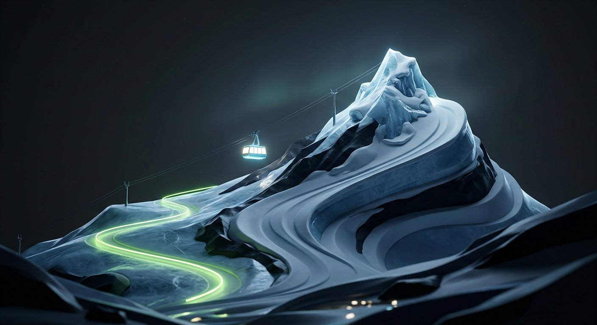

Snø
Live lift queues and trail conditions — operable with one gloved hand at −20°.

Overview
Snø is the companion app for a Scandinavian ski resort: live lift queues, grooming status, and weather on a trail map rendered as flowing light. I designed and built the interface end to end, from the data pipeline to the motion language.
The Challenge
This is extreme-condition UI: direct sunlight on snow, thick gloves, dying batteries, and attention spans measured in chairlift seconds. Every pixel had to justify its energy cost.
The Process
Design for gloves
All primary actions live in the bottom third, targets are 56pt minimum, and nothing—nothing—requires a long press.
Trails as light
Open, busy, and closed runs read at a glance as a light-trail map animated at walking-pace speed. No legend required after first use.
Offline by default
The full trail map and the day's last known conditions live on-device. The mountain does not care about your signal.
The Outcome
Snø launched for the 2026 season across the resort’s three peaks. Early numbers: 41% of scanned lift passes linked to the app, and queue-time complaints to guest services dropped noticeably in the first month.
Next ProjectFirst resort app I have used that respects cold fingers.
Season pass holder, review